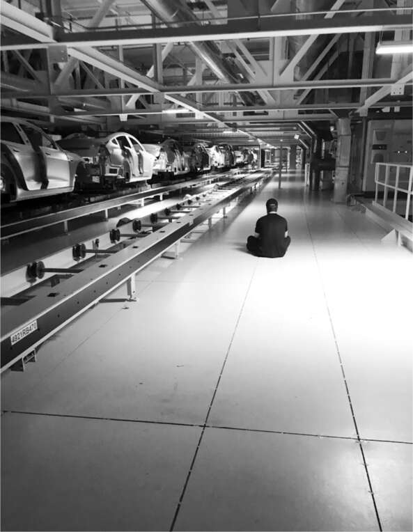

46 Địa Ngục Nhà Máy Fremont Tesla,
Những người bán khống
Khi tình trạng tắc nghẽn tại nhà máy pin Nevada giảm bớt vào mùa xuân năm 2018, Musk chuyển trọng tâm sang nhà máy lắp ráp ô tô Fremont, nằm ở rìa khu công nghiệp Silicon Valley, bên kia vịnh San Francisco so với Palo Alto. Đầu tháng 4, nhà máy chỉ sản xuất được hai nghìn chiếc Model 3 mỗi tuần. Dường như không có cách nào để Musk có thể thúc đẩy dây chuyền lắp ráp đạt được con số thần kỳ năm nghìn chiếc mỗi tuần, một lời hứa mà ông đã đưa ra với Phố Wall vào cuối tháng 6.
Musk đã đặt cược bằng cách yêu cầu tất cả các quản lý đặt mua đủ linh kiện và vật liệu để sản xuất số lượng đó. Những thứ này phải được thanh toán, nhưng nếu chúng không được chuyển thành ô tô hoàn chỉnh, Tesla sẽ gặp vấn đề về dòng tiền, dẫn đến một vòng xoáy suy vong. Kết quả là một đợt hoạt động điên cuồng khác mà Musk gọi là "bứt phá".
Cổ phiếu Tesla dao động gần mức cao nhất mọi thời đại vào đầu năm 2018, khiến giá trị công ty vượt qua cả General Motors, mặc dù GM đã bán được 10 triệu xe với lợi nhuận 12 tỷ đô la vào năm trước, trong khi Tesla chỉ bán được 100.000 xe và lỗ 2,2 tỷ đô la. Những con số đó, cùng với sự hoài nghi về cam kết sản xuất năm nghìn xe mỗi tuần của Musk, đã khiến cổ phiếu Tesla trở thành mục tiêu của những người bán khống, những người kiếm lời khi giá cổ phiếu giảm. Đến năm 2018, Tesla đã trở thành cổ phiếu bị bán khống nhiều nhất trong lịch sử.
Điều này khiến Musk vô cùng tức giận. Ông tin rằng những người bán khống không chỉ là những người hoài nghi mà còn là những kẻ xấu xa: "Họ là những con đỉa bám trên cổ doanh nghiệp." Những người bán khống công khai tấn công Tesla và cá nhân Musk. Ông thường lướt Twitter và sôi máu về những thông tin sai lệch. Tệ hơn nữa là những thông tin chính xác. "Họ có dữ liệu cập nhật từ các nguồn trong công ty và máy bay không người lái bay qua nhà máy của chúng tôi, cung cấp cho họ số liệu theo thời gian thực," ông nói. "Họ tự tổ chức thành một lực lượng mặt đất và một lực lượng không quân bán khống. Mức độ thông tin nội bộ mà họ có được thật điên rồ."
Điều đó cuối cùng sẽ dẫn đến sự sụp đổ của họ. Những người bán khống có số liệu cụ thể về số lượng xe có thể được sản xuất trên hai dây chuyền lắp ráp tại Fremont, và điều đó khiến họ kết luận rằng Tesla không thể đạt được năm nghìn xe mỗi tuần vào giữa năm 2018. "Chúng tôi nghĩ rằng sự lừa dối sắp bắt kịp TSLA," David Einhorn, một trong những người bán khống, viết. "Hành vi thất thường của Elon Musk cho thấy rằng ông ấy cũng nhìn nhận điều đó theo cách tương tự." Và Jim Chanos, người bán khống nổi tiếng nhất, công khai tuyên bố rằng cổ phiếu Tesla về cơ bản là vô giá trị.
Vào khoảng thời gian đó, Musk đã đặt cược ngược lại. Hội đồng quản trị Tesla đã trao cho ông gói lương thưởng táo bạo nhất trong lịch sử Mỹ, một gói lương sẽ không trả cho ông bất cứ điều gì nếu giá cổ phiếu không tăng đáng kể, nhưng có khả năng trả 100 tỷ đô la hoặc hơn nếu công ty đạt được một loạt mục tiêu cực kỳ táo bạo, bao gồm cả việc tăng sản lượng, doanh thu và giá cổ phiếu. Có rất nhiều người hoài nghi rằng ông có thể đạt được các mục tiêu đó. "Ông Musk sẽ chỉ được trả lương nếu ông đạt được một loạt các cột mốc đáng kinh ngạc dựa trên giá trị thị trường và hoạt động của công ty," Andrew Ross Sorkin viết trên tờ New York Times. "Nếu không, ông sẽ không được trả gì cả." Khoản thanh toán sẽ đạt mức tối đa, Sorkin viết, chỉ khi "ông Musk bằng cách nào đó tăng giá trị của Tesla lên 650 tỷ đô la - một con số mà nhiều chuyên gia cho rằng là điều không tưởng."
Walk to the red
Giữa nhà máy Fremont là phòng họp chính, được gọi là Jupiter. Musk sử dụng nó làm văn phòng, phòng họp, nơi trú ẩn khỏi những dằn vặt tinh thần, và đôi khi là nơi để ngủ. Một loạt màn hình, nhấp nháy và cập nhật như bảng hiển thị chứng khoán, theo dõi theo thời gian thực tổng sản lượng của nhà máy và của từng trạm làm việc.
Musk nhận ra rằng thiết kế một nhà máy tốt cũng giống như thiết kế một vi mạch. Điều quan trọng là tạo ra, trong từng khu vực, mật độ, dòng chảy và quy trình phù hợp. Vì vậy, ông chú ý nhất đến một màn hình hiển thị từng trạm trên dây chuyền lắp ráp với đèn xanh hoặc đỏ cho biết nó có đang hoạt động trơn tru hay không. Cũng có đèn xanh đỏ tại các trạm, vì vậy Musk có thể đi bộ khắp nhà máy và tập trung vào các điểm gặp sự cố. Nhóm của ông gọi đó là “tiến đến đèn đỏ”.
Cuộc tăng tốc tại Fremont bắt đầu vào tuần đầu tiên của tháng 4 năm 2018. Thứ Hai hôm đó, ông bắt đầu đi bộ khắp nhà máy với dáng đi nhanh nhẹn như gấu, hướng đến bất kỳ đèn đỏ nào ông nhìn thấy. Vấn đề là gì? Thiếu một bộ phận. Ai phụ trách bộ phận đó? Gọi anh ta đến đây. Một cảm biến cứ bị lỗi. Ai đã hiệu chỉnh nó? Tìm người có thể mở bảng điều khiển. Chúng ta có thể điều chỉnh cài đặt không? Tại sao chúng ta lại cần cái cảm biến chết tiệt đó?
Quá trình bị tạm dừng chiều hôm đó vì SpaceX đang thực hiện một nhiệm vụ cung cấp hàng hóa quan trọng cho Trạm Vũ trụ. Vì vậy, Musk trở lại phòng họp Jupiter để xem nó trên một trong các màn hình. Nhưng ngay cả khi đó, mắt ông vẫn cứ liếc nhìn các màn hình hiển thị số liệu sản xuất và các điểm nghẽn trên dây chuyền Tesla. Sam Teller gọi đồ ăn Thái Lan mang về, sau đó Musk tiếp tục đi khắp nhà máy, tìm kiếm những đèn đỏ. Lúc 2:30 sáng, ông ở cùng ca đêm bên dưới một chiếc xe đang được di chuyển trên giá, xem các bu lông được lắp đặt. Tại sao chúng ta có bốn bu lông ở đó? Ai đặt ra thông số kỹ thuật đó? Chúng ta có thể làm với hai cái không? Thử xem.
Suốt mùa xuân và đầu mùa hè năm 2018, ông lượn lờ khắp nhà máy, giống như ông đã làm ở Nevada, đưa ra quyết định ngay tại chỗ. “Elon hoàn toàn như phát điên, đi từ trạm này sang trạm khác”, Juncosa nói. Musk tính toán rằng vào một ngày tốt lành, ông đã đưa ra một trăm quyết định chỉ huy khi đi bộ khắp nhà máy. “Ít nhất hai mươi phần trăm sẽ sai, và chúng tôi sẽ thay đổi chúng sau”, ông nói. “Nhưng nếu tôi không đưa ra quyết định, chúng tôi sẽ chết.”
Một ngày nọ, Lars Moravy, một giám đốc điều hành cấp cao có giá trị, đang làm việc tại trụ sở điều hành của Tesla cách đó vài dặm ở Palo Alto. Anh nhận được một cuộc gọi khẩn cấp từ Omead Afshar yêu cầu anh đến nhà máy. Ở đó, anh thấy Musk ngồi khoanh chân dưới băng chuyền nâng cao di chuyển thân xe xuống dây chuyền. Một lần nữa, anh bị ấn tượng bởi số lượng bu lông đã được chỉ định. “Tại sao có sáu cái ở đây?”, anh hỏi, chỉ tay.
“Để làm cho nó ổn định khi va chạm”, Moravy trả lời.
“Không, tải trọng va chạm chính sẽ đi qua đường ray này”, Musk giải thích. Ông đã hình dung ra tất cả các điểm chịu áp lực sẽ ở đâu và bắt đầu đọc vanh vách các con số dung sai tại mỗi điểm. Moravy gửi nó trở lại cho các kỹ sư để thiết kế lại và thử nghiệm.
Tại một trạm khác, khung xe đang lắp ráp dở được bắt vít vào một giá trượt để di chuyển qua công đoạn lắp ráp cuối cùng. Musk thấy những cánh tay robot siết bu lông quá chậm. "Ngay cả tôi cũng làm nhanh hơn", ông nói. Ông bảo các công nhân kiểm tra cài đặt của máy siết bu lông. Nhưng không ai biết cách mở bảng điều khiển. "Được rồi", ông nói, "Tôi sẽ đứng đây cho đến khi tìm được người mở được bảng điều khiển này". Cuối cùng, một kỹ thuật viên biết cách truy cập vào bộ điều khiển của robot đã được tìm thấy. Musk phát hiện ra rằng robot được đặt ở mức 20% tốc độ tối đa và cài đặt mặc định yêu cầu cánh tay xoay bu lông ngược hai lần trước khi xoay tới để siết chặt. "Cài đặt gốc của nhà máy lúc nào cũng ngớ ngẩn", ông nói. Vì vậy, ông nhanh chóng viết lại mã để xóa các vòng xoay ngược. Sau đó, ông đặt tốc độ lên 100%. Điều này làm hỏng ren, vì vậy ông giảm xuống 70%. Nó hoạt động tốt và giảm hơn một nửa thời gian bắt bu lông xe vào giá trượt.
Một phần của quy trình sơn, bể sơn tĩnh điện, liên quan đến việc nhúng vỏ xe vào bể. Vỏ xe có các lỗ nhỏ để khoang thoát nước sau khi nhúng. Những lỗ này sau đó được bịt bằng miếng cao su tổng hợp, gọi là miếng butyl. "Tại sao chúng ta lại dùng cái này?", Musk hỏi một trong những quản lý dây chuyền, người này trả lời rằng nó đã được bộ phận cấu trúc xe quy định. Vì vậy, Musk đã triệu tập trưởng bộ phận đó. "Cái quái gì đây?", ông hỏi. "Chúng đang làm chậm toàn bộ dây chuyền". Ông được cho biết rằng trong trường hợp lũ lụt, nếu nước cao hơn sàn xe, các miếng butyl giúp ngăn sàn xe bị ướt quá nhiều. "Thật điên rồ", Musk đáp. "Mười năm mới có một trận lụt như vậy. Khi đó, thảm sàn có thể bị ướt". Các miếng butyl đã bị loại bỏ.
Dây chuyền sản xuất thường dừng lại khi các cảm biến an toàn được kích hoạt. Musk quyết định rằng chúng quá nhạy, kích hoạt khi không có vấn đề thực sự. Ông đã thử nghiệm một số cảm biến để xem liệu một vật nhỏ như một mảnh giấy rơi qua cảm biến có thể kích hoạt dừng dây chuyền hay không. Điều này dẫn đến một chiến dịch loại bỏ các cảm biến trong cả xe Tesla và tên lửa SpaceX. "Trừ khi một cảm biến là hoàn toàn cần thiết để khởi động động cơ hoặc dừng động cơ một cách an toàn trước khi nó phát nổ, nó phải bị xóa bỏ", ông viết trong email gửi các kỹ sư SpaceX. "Từ nay về sau, bất kỳ ai đặt cảm biến (hoặc bất cứ thứ gì) lên động cơ mà không thực sự quan trọng sẽ bị yêu cầu rời đi".
Một số quản lý đã phản đối. Họ cảm thấy rằng Musk đang ảnh hưởng đến sự an toàn và chất lượng để đẩy nhanh tiến độ sản xuất. Giám đốc cấp cao về chất lượng sản xuất đã rời đi. Một nhóm nhân viên hiện tại và trước đây nói với CNBC rằng họ bị "áp lực phải cắt giảm quy trình để đạt được mục tiêu sản xuất Model 3 đầy tham vọng". Họ cũng cho biết họ bị thúc ép thực hiện các biện pháp khắc phục tạm thời, chẳng hạn như sửa chữa các giá đỡ nhựa bị nứt bằng băng keo điện. Tờ New York Times đưa tin rằng công nhân cảm thấy áp lực phải làm việc mười giờ mỗi ngày. "Luôn là 'Chúng ta đã sản xuất được bao nhiêu xe rồi?' - một áp lực liên tục để sản xuất", một công nhân nói với tờ báo. Có một số sự thật trong những lời phàn nàn đó. Tỷ lệ chấn thương của Tesla cao hơn 30% so với phần còn lại của ngành.
Loại bỏ robot
Trong quá trình thúc đẩy sản xuất tại nhà máy pin Nevada, Musk nhận ra rằng có những công việc, đôi khi rất đơn giản, con người làm tốt hơn robot. Chúng ta có thể nhìn quanh phòng và tìm đúng dụng cụ cần thiết. Sau đó, ta có thể đi đến, cầm nó lên bằng ngón tay và ngón cái, quan sát vị trí cần dùng và đưa nó đến đó bằng cánh tay. Dễ dàng, phải không? Nhưng không hề dễ dàng với robot, dù camera của chúng tốt đến đâu. Tại Fremont, nơi mỗi dây chuyền lắp ráp có 1200 thiết bị robot, Musk cũng nhận ra điều tương tự như ở Nevada về sự nguy hiểm của việc theo đuổi tự động hóa quá mức.
Gần cuối dây chuyền lắp ráp cuối cùng là những cánh tay robot đang cố gắng điều chỉnh các miếng đệm nhỏ xung quanh cửa sổ. Chúng gặp rất nhiều khó khăn. Một hôm, sau khi đứng lặng lẽ quan sát những robot cứng nhắc này trong vài phút, Musk thử tự tay làm công việc đó. Thật dễ dàng đối với con người. Ông ra lệnh, tương tự như lệnh ông đã đưa ra ở Nevada. "Các anh có 72 giờ để loại bỏ mọi máy móc không cần thiết", ông tuyên bố.
Việc loại bỏ robot bắt đầu một cách ảm đạm. Mọi người đã đầu tư rất nhiều vào máy móc. Nhưng sau đó, nó trở nên giống như một trò chơi. Musk bắt đầu đi dọc dây chuyền, tay cầm một bình sơn xịt màu cam. "Đi hay ở?", ông hỏi Nick Kalayjian, phó chủ tịch phụ trách kỹ thuật của mình, hoặc những người khác. Nếu câu trả lời là "đi", bộ phận đó sẽ bị đánh dấu bằng chữ X màu cam và công nhân sẽ gỡ bỏ nó khỏi dây chuyền. "Chẳng mấy chốc, ông ấy cười phá lên, như một đứa trẻ", Kalayjian nói.
Musk nhận trách nhiệm về việc tự động hóa quá mức. Ông thậm chí còn công khai tuyên bố điều đó. "Tự động hóa quá mức tại Tesla là một sai lầm", ông viết trên Twitter. "Chính xác hơn là sai lầm của tôi. Con người đang bị đánh giá thấp."
Sau khi giảm tự động hóa và các cải tiến khác, nhà máy Fremont đã sản xuất được 3500 chiếc sedan Model 3 mỗi tuần vào cuối tháng 5 năm 2018. Đó là một con số ấn tượng, nhưng vẫn còn kém xa so với mục tiêu 5000 chiếc mỗi tuần mà Musk đã hứa hẹn vào cuối tháng 6. Những người bán khống, với gián điệp và máy bay không người lái của họ, đã xác định rằng nhà máy, với hai dây chuyền lắp ráp, không thể đạt được con số đó. Họ cũng biết rằng Tesla không thể xây dựng một nhà máy khác, hoặc thậm chí xin giấy phép để làm như vậy, trong ít nhất một năm. "Những người bán khống nghĩ rằng họ có thông tin chính xác", Musk nói, "và họ đều hả hê trên mạng rằng, 'Ha, Tesla tiêu đời rồi.' "
Lều bạt
Musk thích lịch sử quân sự, đặc biệt là những câu chuyện về sự phát triển máy bay chiến đấu. Tại một cuộc họp tại nhà máy Fremont vào ngày 22 tháng 5, ông kể lại một câu chuyện về Thế chiến thứ hai. Khi chính phủ cần đẩy nhanh việc sản xuất máy bay ném bom, họ đã thiết lập các dây chuyền sản xuất tại bãi đậu xe của các công ty hàng không vũ trụ ở California. Ông thảo luận ý tưởng này với Jerome Guillen, người mà ông sẽ sớm thăng chức lên làm chủ tịch mảng ô tô của Tesla, và họ quyết định rằng họ có thể làm điều tương tự.
Có một điều khoản trong quy hoạch khu vực Fremont cho một thứ gọi là "cơ sở sửa chữa xe tạm thời". Nó nhằm mục đích cho phép các trạm xăng dựng lều để thay lốp hoặc ống xả. Nhưng các quy định không quy định kích thước tối đa. "Hãy xin một trong những giấy phép đó và bắt đầu dựng một cái lều lớn", ông nói với Guillen. "Chúng ta sẽ phải nộp phạt sau."
Chiều hôm đó, công nhân Tesla bắt đầu dọn dẹp đống đổ nát phủ lên bãi đậu xe cũ phía sau nhà máy. Không đủ thời gian để lát lại toàn bộ mặt bê tông nứt nẻ, họ chỉ lát một dải dài rồi dựng lều xung quanh. Rodney Westmoreland, một trong những chuyên gia xây dựng hàng đầu của Musk, đã bay đến để điều phối việc thi công, còn Teller thì huy động vài xe kem đến để phục vụ những người đang làm việc dưới trời nắng nóng. Chỉ trong hai tuần, họ đã hoàn thành một nhà xưởng lều b帆 dài 300 mét và rộng 45 mét, đủ lớn để chứa một dây chuyền lắp ráp tạm thời. Thay vì robot, mỗi trạm đều có người vận hành.
Một vấn đề nan giải là họ không có băng chuyền để di chuyển những chiếc xe chưa hoàn thiện qua lều. Tất cả những gì họ có là một hệ thống cũ để di chuyển linh kiện, nhưng nó không đủ mạnh để di chuyển thân xe. "Vì vậy, chúng tôi đã đặt nó trên một mặt phẳng nghiêng nhẹ, và nhờ trọng lực, nó đã đủ sức để di chuyển những chiếc xe với tốc độ phù hợp", Musk nói.
Vào lúc hơn 4 giờ chiều ngày 16 tháng 6, chỉ ba tuần sau khi Musk nảy ra ý tưởng, dây chuyền lắp ráp mới đã cho ra đời những chiếc Model 3 sedan từ nhà xưởng lều tạm bợ. Neal Boudette của tờ New York Times đã đến Fremont để viết bài về Musk, và ông đã tận mắt chứng kiến việc dựng lều trên bãi đậu xe. "Nếu tư duy thông thường khiến nhiệm vụ của bạn trở nên bất khả thi," Musk nói với ông, "thì tư duy khác biệt là điều cần thiết."
Sinh nhật
Sinh nhật lần thứ 47 của Musk, vào ngày 28 tháng 6 năm 2018, diễn ra ngay trước thời hạn mà ông đã hứa hẹn đạt sản lượng năm nghìn xe mỗi tuần. Ông dành phần lớn thời gian trong ngày ở xưởng sơn của nhà máy chính. Mỗi khi có sự chậm trễ, ông lại hỏi: "Tại sao lại bị tắc nghẽn?", rồi ông đi đến điểm nghẽn và đứng đó cho đến khi các kỹ sư đến và khắc phục tình hình.
Amber Heard gọi điện chúc mừng sinh nhật ông, sau đó ông làm rơi điện thoại và nó bị vỡ, nên tâm trạng ông không được tốt. Nhưng Teller đã thuyết phục được ông nghỉ ngơi một chút sau 2 giờ chiều để tổ chức một bữa tiệc nhỏ trong phòng họp. "Chúc mừng năm 48 trong thế giới mô phỏng!" là dòng chữ trên chiếc bánh kem mà Teller mua. Không có dao hoặc nĩa, nên họ ăn bánh bằng tay.
Mười hai giờ sau, vào khoảng 2 giờ 30 sáng, Musk cuối cùng cũng rời khỏi nhà máy và trở lại phòng họp. Nhưng phải mất thêm một giờ nữa ông mới ngủ thiếp đi ở đó. Thay vào đó, ông theo dõi trên một trong những màn hình vụ phóng tên lửa SpaceX tại Cape Canaveral. Tên lửa mang theo một robot hỗ trợ cùng với các vật tư bao gồm sáu mươi gói cà phê Death Wish siêu đậm đặc cho các phi hành gia trên Trạm Vũ trụ Quốc tế. Vụ phóng diễn ra hoàn hảo, đánh dấu sứ mệnh vận chuyển hàng hóa thành công thứ mười lăm mà SpaceX thực hiện cho NASA.
Ngày 30 tháng 6, thời hạn Musk đã hứa hẹn đạt mục tiêu năm nghìn xe mỗi tuần, là thứ Bảy, và khi Musk thức dậy trên chiếc ghế sofa trong phòng họp sáng hôm đó và nhìn vào màn hình, ông nhận ra họ sẽ thành công. Ông làm việc vài giờ trên dây chuyền sơn, sau đó vội vã rời khỏi nhà máy, vẫn mặc áo bảo hộ, để kịp ra sân bay đến Tây Ban Nha làm phù rể cho đám cưới của Kimbal tại một ngôi làng thời trung cổ ở Catalonia.
Lúc 1 giờ 53 sáng Chủ nhật, ngày 1 tháng 7, một chiếc Model 3 màu đen được xuất xưởng với một biểu ngữ giấy dán trên kính chắn gió ghi "Chiếc thứ 5000". Khi nhận được ảnh chụp chiếc xe trên iPhone, Musk đã gửi tin nhắn cho tất cả nhân viên Tesla: "Chúng ta đã làm được!!… Tạo ra những giải pháp hoàn toàn mới mà trước đây được cho là không thể. Vất vả trong những chiếc lều. Dù sao thì… Nó đã hiệu quả…. Tôi nghĩ chúng ta vừa trở thành một công ty ô tô thực thụ."
Thuật toán
Trong bất kỳ cuộc họp sản xuất nào, dù ở Tesla hay SpaceX, Musk đều có khả năng cao sẽ nhắc lại điều mà ông gọi là "thuật toán", như một câu thần chú. Nó được hình thành từ những bài học ông rút ra trong giai đoạn sản xuất gặp khó khăn tại các nhà máy ở Nevada và Fremont. Các giám đốc điều hành của ông đôi khi mấp máy môi và lẩm nhẩm theo, giống như họ đang đọc kinh cầu nguyện cùng với linh mục của mình. "Tôi đã trở thành một chiếc máy hát bị hỏng khi nhắc đi nhắc lại về thuật toán này," Musk nói. "Nhưng tôi nghĩ việc lặp lại nó đến mức gây khó chịu cũng có ích." Nó có năm điều răn:
1. Nghi ngờ mọi yêu cầu. Mỗi yêu cầu phải kèm theo tên của người đưa ra. Bạn không bao giờ nên chấp nhận một yêu cầu đến từ một phòng ban, chẳng hạn như từ "phòng pháp chế" hoặc "phòng an toàn". Bạn cần biết tên của người thực sự đưa ra yêu cầu đó. Sau đó, bạn nên đặt câu hỏi về nó, bất kể người đó thông minh đến đâu. Các yêu cầu từ những người thông minh là nguy hiểm nhất, bởi vì mọi người ít có khả năng nghi ngờ chúng. Luôn luôn làm như vậy, ngay cả khi yêu cầu đến từ tôi. Sau đó, hãy làm cho các yêu cầu bớt ngớ ngẩn.
2. Loại bỏ bất kỳ bộ phận hoặc quy trình nào bạn có thể. Bạn có thể phải thêm chúng trở lại sau đó. Trên thực tế, nếu cuối cùng bạn không thêm lại ít nhất 10% trong số chúng, thì bạn đã chưa loại bỏ đủ.
3. Đơn giản hóa và tối ưu hóa. Điều này nên được thực hiện sau bước hai. Một sai lầm phổ biến là đơn giản hóa và tối ưu hóa một bộ phận hoặc quy trình không nên tồn tại.
4. Rút ngắn chu kỳ. Mọi quy trình đều có thể được tăng tốc. Nhưng chỉ làm điều này sau khi bạn đã thực hiện theo ba bước đầu tiên. Tại nhà máy Tesla, tôi đã lãng phí rất nhiều thời gian để tăng tốc các quy trình mà sau này tôi nhận ra là nên bị loại bỏ.
5. Tự động hóa. Điều đó đến sau cùng. Sai lầm lớn ở Nevada và Fremont là tôi đã bắt đầu bằng cách cố gắng tự động hóa mọi bước. Chúng ta nên đợi cho đến khi tất cả các yêu cầu đã được xem xét, các bộ phận và quy trình đã bị loại bỏ, và các lỗi đã được khắc phục.
Thuật toán này đôi khi đi kèm với một vài hệ quả, trong số đó:
-Tất cả các quản lý kỹ thuật phải có kinh nghiệm thực tế. Ví dụ, quản lý của các nhóm phần mềm phải dành ít nhất 20% thời gian của họ để viết mã. Quản lý mái nhà năng lượng mặt trời phải dành thời gian trên mái nhà để lắp đặt. Nếu không, họ giống như một đội trưởng kỵ binh không biết cưỡi ngựa hoặc một vị tướng không biết dùng kiếm.
-Tinh thần đồng đội là nguy hiểm. Nó khiến mọi người khó có thể thách thức công việc của nhau. Có xu hướng không muốn làm khó đồng nghiệp. Điều đó cần phải tránh.
-Sai lầm không sao cả. Chỉ cần đừng tự tin khi sai.
-Đừng bao giờ yêu cầu nhân viên làm những điều bạn không sẵn sàng làm.
-Bất cứ khi nào có vấn đề cần giải quyết, đừng chỉ gặp gỡ các quản lý của bạn. Hãy gặp gỡ cấp độ ngay dưới các quản lý của bạn.
-Khi tuyển dụng, hãy tìm kiếm những người có thái độ đúng đắn. Kỹ năng có thể được đào tạo. Thay đổi thái độ đòi hỏi phải thay đổi não.
-Tinh thần khẩn trương đến mức ám ảnh là nguyên tắc hoạt động của chúng tôi.
-Quy tắc duy nhất là những quy tắc do các định luật vật lý quy định. Mọi thứ khác chỉ là khuyến nghị.

Trên dây chuyền lắp ráp

Trên dây chuyền và nghỉ ngơi dưới bàn làm việc tại nhà máy Fremont